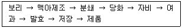

식품산업기사(구) (2010-07-25 기출문제)
1과목: 식품위생학
1. aflatoxin에 대한 설명으로 틀린 것은?
- 처음에는 칠면조 x병이라 했다.
- aspergillus flavus의 생산물이다.
- 인체에 유해하나 발암성 물질이 아니다.
- 생산 최적조건은 수분, 온도, 상대습도에 따른다.
(정답률: 86%)

2. 수질검사를 위한 불소의 측정시 검수의 전처리 방법에 해당하지 않은 것은?
- 비화수소법
- 증류법
- 이온 교환수지법
- 잔류염소의 제거
(정답률: 44%)
3. 식품오염물은 음식물을 직접 또는 먹이사슬에 의한 생물농축을 통해 인체의 건강장해를 일으키는 환경 오염물질이 발생하는데, 그 발생 원인과 거리가 먼 것은?
- 식품 또는 첨가물의 오용 및 남용 등에 의한 경우
- 식품의 제조, 가공과정에서 유해물질이 혼입되는 경우
- 기구나 용기포장에서 유해물질이 용출한 경우
- 물리적 변화로 인한 식품조직의 변형에 의한 경우
(정답률: 75%)
4. 식중독 증상에서 cyanosis 현상이 나타나는 것은?
- 굴독
- 섭조개독
- 복어독
- 독꼬치독
(정답률: 64%)
5. 다음 중 살균력이 가장 강한 자외선의 파장은?
- 260nm
- 350nm
- 400nm
- 546nm
(정답률: 70%)
6. 독소형 식중독엘 속하며 신경증상을 일으킬 수 있는 원인균은?
- salmonella enteritidis
- yersinia enterocolitica
- clostridium botulium
- vibrio parahaemolyticus
(정답률: 91%)
7. 포르말린(formalin)을 축합시켜 만든 것으로 이것이 용출 될 때 위생상 문제가 될 수 있는 합성수지는?
- 페놀수지
- 염화비닐수지
- 폴리에틸렌수지
- 폴리스틸렌수지
(정답률: 66%)
8. 식품위생상 경구전염병의 예방대책으로 가장 중요한 것은?
- 식품을 냉동, 냉장한다.
- 보균자의 식품취급을 막는다.
- 가축사이의 질병을 예방한다.
- 식품 취급 장소의 공기 정화를 철저히 한다.
(정답률: 84%)
9. gram음성의 무아포간균으로서 유당을 분해하여 산과 가스를 생산하며 식품위생 검사와 가장 밀접한 관계가 있는 것은?
- 대장균균
- 젖산균
- 초산균
- 발효균
(정답률: 94%)
10. 폐흡충과 관계 깊은 것은?
- 곤충, 곰팡이
- 채소, 과실류
- 쇠고기, 돼지고기
- 어패류, 가재
(정답률: 92%)
11. 다음 중 식품위생검사와 거리가 먼 것은?
- 관능검사
- 이화학적 검사
- 혈청학적 검사
- 생물학적 검사
(정답률: 90%)
12. LD50의 의미로 옳은 것은?
- 실험동물의 50%를 사망 시키는데 필요한 최소 투여량
- 실험동물의 최소 50마리를 사용하는 실험
- 실험동물의 50% 이상을 죽이는데 요하는 투여량
- 수명이 절반으로 줄어드는데 요하는 투여량
(정답률: 90%)
13. 자외선의 투과력을 고려 할 때 다음 중 가장 효과적인 살균대상은?
- 공기와 물
- 불투명한 시험관
- 조리대와 조리기구 내부
- 금속용기와 도지기용기 내부
(정답률: 67%)
14. pvc(polyvinyl chloride) film 을 식품포장재료로 사용했을 때 잔존할 수 있는 단위체로 특히 문제가 되는 발암성 유해물은?
- ca-chloride
- an(acrylonitril)
- dep(diethyl phthalate)
- vcm(vinyl chloride monomer)
(정답률: 76%)
15. 민물고기의 생식에 의하여 감염되는 기생충증은?
- 간흡충증
- 선모충증
- 무구조충
- 유그조충
(정답률: 89%)
16. 식품의 보존방법 중 방사선조사에 대한 설명으로 틀린 것은?
- 1kGy 이하의 저선량 방사선 조사를 통해 발아 억제, 기생충사멸, 숙도 지연 등의 효과를 얻을 수 있다.
- 바이러스의 사멸을 위해서는 발아 억제를 위한 조사보다 높은 선량이 필요하다.
- 10kGy 이하의 방사선 조사로는 모든 병원균을 완전히 사멸시키지는 못한다.
- 안전성을 고려하여 식품에 사용이 허용된 방사선은 140ba 이다.
(정답률: 69%)
17. 가열을 통한 살균에 대한 설명을 옳은 것은?
- 살균효과는 건열보다는 습열이 더 크다.
- 내열성은 세균의 종류에 따라 차이가 없다.
- 영양세포가 포자보다 내열성이 강하다.
- 내열성은 젊은 세포쪽이 강하다.
(정답률: 52%)
18. mycotoxin에 관한 설명 중 틀린 것은?
- 비단백성의 저분자 화합물로서 항원성을 가진다.
- 열에 강하여 조리나 가공 중에 분해, 파괴되지 않는다.
- 독성이 강하고 발암성 등이 있어 인체에 치명적이다.
- 곰팡이 대사산물이다.
(정답률: 50%)
19. haccp 제도와 관련된 용어의 정의 중 틀린 것은?
- haccp은 식품의 원료나 제조, 가공 및 유통의 전 과정에서 위해물질이 해당식품에 혼입되거나 오염되는 것을 사전에 방지하기 위하여 각 과정을 중점적으로 관리하는 기준을 말한다.
- 위해요소분석은 식품안전에 영향을 줄 수 있는 미생물학적 인자에 대해서만 이를 유발할 수 있는 조건이 존재하는지의 여부를 판별하기 위한 필요한 정보를 수집하고 평가하는 일련의 과정이다.
- 한계기준은 중요 관리점에서의 위해요소관리가 허용범위내로 충분히 이루어지고 있는지의 여부를 판단할 수 있는 기준이나 기준치를 말한다.
- 축산물 위해요소 중점관리기준에서 선행요건 프로그램은 축산물작업장이 haccp을 적용하는 데에 토대가 되는 위생관리프로그램을 말한다.
(정답률: 82%)
20. 식품오염에 문제되는 방사능 핵종이 아닌 것은?
- sr90
- cs137
- i131
- c12
(정답률: 88%)
2과목: 식품화학
21. 식품의 물성측정 기기와 관계없는 것은?
- instron
- curdmeter
- hydrometer
- extensograph
(정답률: 57%)
22. 2n hcl 40ml 와 4n hcl 60ml 를 혼합했을 때의 농도는?
- 3.0n
- 3.2n
- 3.4n
- 3.6n
(정답률: 86%)
23. 엽록소(chlorophyll)의 녹색을 오래 보존하는 방법은?
- chlorophyll 의 mg을 cu로 치환시킨다.
- chlorophyll 의 mg을 h로 치환시킨다.
- chlorophyll 의 mg을 k로 치환시킨다.
- chlorophyll 의 mg을 n로 치환시킨다.
(정답률: 84%)
24. 결핍되면 혈관의 침투성이 커져 혈액이 침투되어 피부에 반점이 생기는 결핍증을 나타내는 비타민이 많이 들어 있는 식품은?
- 간
- 딸기
- 귤껍질
- 식용유
(정답률: 75%)
25. 밥을 상온에서 오래 두었을 때 생쌀과 같이 굳어지는 현상은?
- 호화
- 호정화
- 노화
- 캐러멜화
(정답률: 93%)
26. 관능적 특성의 영향요인들 중 심리적 요인이 아닌것은?
- 기대오차
- 습관에 의한 오차
- 후광효과
- 억제
(정답률: 84%)
27. 서양고추냉이, 겨자, 양배추, 무 등을 분쇄했을 때 자극적인향기를 내는 성분은?
- methyl mercaptan
- limonene
- isothiocyanate
- diallyl sulfide
(정답률: 78%)
28. lactose가 들어있는 식품은?
- 쇠고기
- 채소
- 우유
- 달걀
(정답률: 97%)
29. 식품을 데치기(blanching)하는 주요 목적은?
- 식품 세척
- 해충 예방
- 식품 건조 방지
- 식품 중 효소 불활성화
(정답률: 90%)
30. 딸기, 포도, 가지 등의 붉은색이나 보라색이 가공, 저장 중 불안정하여 쉽게 갈색으로 변하는데 이색소는?
- 엽록소
- 카로티노이드계
- 플라보노이드계
- 안토시아닌계
(정답률: 97%)
31. 토마토의 빨간색 성분은?
- 리코펜
- 캡산틴
- 푸코크산틴
- 피살리엔
(정답률: 100%)
32. 발색단에 포함되지 않은 원자단은?
- -oH
- >c=0
- -NO2
- -N=N-
(정답률: 48%)
33. 비타민D2 에 대한 설명으로 틀린 것은?
- 화학명은 calciferol 이다.
- 산소와 광선에 안정하다.
- 항구루병 작용을 한다.
- 에르고스테롤의 자외선조사에 의해 생성 된다.
(정답률: 68%)
34. 식품과 매운맛을 내는 물질의 연결이 옳은 것은?
- 고추 - 피페린
- 마늘 - 알리신
- 겨자 - 캡사이신
- 후추 - 진저롤
(정답률: 97%)
35. 단백질 변성에 의한 일반적인 변화가 아닌 것은?
- 용해도의 증가
- 반응성의 증가
- 생물학적 활성의 소실
- 응고 및 겔화
(정답률: 72%)
36. 채소, 과일에 많이 함유되어 있는 천연항산화제는?
- sorbic acid
- salicylic acid
- ascorbic acid
- benzoic acid
(정답률: 97%)
37. 반고형의 식품을 삼킬 수 있는 상태로까지 붕괴시키는데 필요한 힘으로 설명 되어지는 식품의 texture 성질은?
- 부착성
- 깨짐성, 취약성
- 저작성
- 검성
(정답률: 74%)
38. 아미노산에 대하여 양성을 나타내는 정색반응은?
- 요오드 반응
- 펠링 반응
- 닌히드린 반응
- 부렛 반응
(정답률: 88%)
39. 머리카락, 발톱 및 손톱의 성장기능에 필요한 영양소는?
- 단배질
- 무기질
- 지질
- 탄수화물
(정답률: 97%)
40. 생선의신선도 측정에 이용되는 성분은?
- 아세트알데히드
- 트리메틸아민
- 포름알데히드
- 디아세틸
(정답률: 100%)
3과목: 식품가공학
41. 어떤 식품의 Q10 값이 3이고 50℃ 에서의 유통기한이 2일이라면 10℃ 에서의 유통기한은?
- 162일
- 150일
- 240일
- 80일
(정답률: 60%)
42. 육류를 냉동했을 때 변성을 가장 잘 일으키는 단백질은?
- myoglobin
- myosin
- globulin
- collagen
(정답률: 58%)
43. 초기수분함량이 8.0%(건물기준)인 어떤 건조식품 100g이 15×20cm 크기의 두께 0.06mm 폴리프로필렌으로 된 파우치에 포장되어 25℃, 습도 75% 에 저장시 비효소적인 갈변이 일어나지 않고 한계수분 함량까지 안정하게 저장될 수있는 유통기한을 구하였을 때, 20일이 얻어졌다. 동일한 건조식품 100g이 20×30cm 크기의 두께 0.03mm 폴리프로필렌 파우치에 포장되어 동일한 조건에서 저장 되었을때 유통기한은 얼마가 되겠는가?
- 5일
- 10일
- 20일
- 80일
(정답률: 38%)
44. 건조 과실 및 채소의 제조와 관계가 없는 것은?
- H2SO3
- H3PO4
- NaOH
- blanching
(정답률: 43%)
45. 수산가공품의 종류가 잘못 연결된 것은?
- 염장품 - 굴비
- 동건품 - 마른명태(황태)
- 연제품 - 판붙이 어묵, 부들어묵, 게맛어묵
- 해조가공품 - 알긴산, 카라기난
(정답률: 75%)
46. 버터제조공정 중 연압공정의 주목적과 관련성이 가장적은 것은?
- 점조성부여
- 식염용해 촉진
- 수분함량조절
- 버터입자 냉각
(정답률: 60%)
47. 아이스크림제조시 가장 적합한 오버런의 범위는?
- 20~40%
- 40~60%
- 60~80%
- 80~100%
(정답률: 63%)
48. 우유의 균질화 목적이 아닌 것은?
- 지방의 분리방지
- 커드의 연화
- 미생물의 발육억제
- 지방구의 미세화
(정답률: 78%)
49. 달걀의 할란검사와 관련이 없는 항목은?
- 난백계수
- haugh
- 난형계수
- 난황편심도
(정답률: 52%)
50. 콩의 전체 성분을 이용한 제품은?
- 된장
- 간장
- 토코페롤
- 두유
(정답률: 85%)
51. 건조란 제조시 갈변방지를 위한 제당처리법이 아닌 것은?
- 자연 발효에 의한 방법
- 효모에 의한 방법
- 효소에 의한 방법
- 동결에 의한 방법
(정답률: 58%)
52. 탈산소제 봉입포장의 효과가 아닌 것은?
- 곰팡이 성장 방지
- 벌레 증식 방지
- 지방과 색소의 산화방지
- 혐기성세균 증식 방지
(정답률: 76%)
53. 쇼트닝에 대한 설명으로 틀린 것은?
- 제품 100g중 20ml 이하의 공기 또는 질소 가스를 함유한다.
- 마가린과 같은 에멀젼 상태이다.
- 빵 반죽이나 버터크림 제조시 공기를 잘 부착시키는 크림성의기능을 한다.
- 비스킷, 쿠키 등을 제조할 때 쇼트닝성을 부여한다.
(정답률: 80%)
54. 가열치사 시간을 1/10 로 감소시키기 위하여 처리하는 가열온도의 변화를 나타내는 값은?
- d값
- z값
- f값
- l값
(정답률: 70%)
55. 고기의 숙성에 대한설명으로 틀린 것은?
- 도살 후 고기의 ph변화는 주로 젖산이나 인산의 생성 때문이다.
- 고기의 글리코겐 함량은 숙성 중 변하지 않는다.
- 산소의 공급이 충분한 경우에는 젖산 생성량이 적어진다.
- 고기의 숙성은 온도가 높아지면 빨리 진행된다.
(정답률: 93%)
56. 잼을 제조할 때 젤리점 을 결정하는 방법이 잘못된 것은?
- 나무주걱으로 시럽을 떠서 흘러내리게 하여 주걱 끝에 젤리모양으로 굳은 채로 떨어지는 것을 시험하는 스푼법
- 끓는 시럽의 온도가 104~1⑤℃가 되었는지 온도계로 측정
- 당도계로 당도가 55% 정도가 되는 점을 측정
- 농축액을 찬물이 든 유리컵에 소량 떨어지게 하여 밑바닥가지 굳은 채로 떨어지는지를 조사하는 컵법
(정답률: 72%)
57. 식품과 저정 온도의 연결이 부적합한 것은?
- 바나나 : 13~16℃
- 호박 : 10~15℃
- 레몬 : 5~10℃
- 고구마 : 0~1℃
(정답률: 84%)
58. 콩단백질의 주성분이며 두부 제조시 묽은 염류 용액에 의해 응고되는 성질을 이용하는 물질은?
- 알부민
- 글리시닌
- 제인
- 락토글로불린
(정답률: 89%)
59. 과일 및 채소류 통조림 제조시 기계적 탈기법에 해당 되는 것은?
- 끓는물 속에 내용물이 든 통조림통을 넣어 가열하는 경우와 증기로 가열하는 방법
- 진공 밀봉기를 이용하여 감압된 장치 속에서 탈기와 밀봉을 동시에 하는 방법
- 밀봉시에 관의 HEAD SPACE 내에 수증기를 분사하여 공기를 수증기로 바꾸어 밀봉하는 방법
- 탈기함을 이용하여 수증기가 응축되어 생긴 물방울이 관내에 떨어지지 않게 탈기하는 방법
(정답률: 80%)
60. 샐러드기름을 제조할 때 탈납 과정의 주요 목적은?
- 불포화지방산을 제거한다.
- 제온에서 고체 상태로 존재하는 지방을 제거한다.
- 지방 추출 원료의 찌꺼기를 제거한다.
- 수분을 제거한다.
(정답률: 67%)
4과목: 식품미생물학
61. 호기성 내지는 통성혐기성 간균으로 된장류 제조에서 유용하게 사용되는 세균은?
- proteus
- clostridium
- bacillus
- acetobacter
(정답률: 93%)
62. 아래의 맥주제조공정 중 호프를 첨가하는 공정은?

- 분쇄
- 당화
- 자비
- 여과
(정답률: 79%)
63. 간장 코오지 제조에 많이 이용되는 곰팡이는?
- asperillus oryzae
- rhizopus delemar
- penicillum chrysogenum
- mucor mucedo
(정답률: 93%)
64. 요구르트 제조시 스타터가 생산하는 발효산물이 아닌 것은?
- 젖산
- 아세트알데히드
- 아세톤
- 구연산
(정답률: 55%)
65. 조상균류의 유성적 생활사(접합포자 형성 과정)로 옳은 것은?
- 접합지 - 배우자낭 - 접합자 - 접합포자 - 감수분열 - 포자낭
- 접합자 - 포자낭 - 접합지 - 접합포자 - 감수분열- 배우자낭
- 접합자 - 포자낭 - 접합포자 - 접합지 - 감수분열- 배우자낭
- 접합지 - 배우자낭 - 접합포자 - 접합자 - 감수분열 - 포자낭
(정답률: 59%)
66. 맥주 제조시 사용되는 상면발효효모는?
- saccharomyces carlsbergensis
- saccharomyces cerevisiae
- lactobacillus bulgaricus
- streptococcus thermophilus
(정답률: 79%)
67. 빵의 점질화(rope) 현상을 일으키는 원인균은?
- bacillus thuringiensis
- bacillus anthracis
- bacillus subtilis
- bacillus cereus
(정답률: 74%)
68. 육제품 변패의 형태 중 젖산균에 의해 일어나는 형태가 아닌 것은?
- sucrose 가 존재 할 때 표면 또는 내부에서의 점질물질이 생성된다.
- 적갈색 또는 녹갈색의 산화된 색소가 생성된다.
- 과량의 젖산 생성으로 인한 산패가 일어난다.
- 초록색의 얼룩이 발생 한다.
(정답률: 56%)
69. 바닷고기와 같은 신선어나 보존어로부터 가장 많이 분리되는 균종은?
- achromobacter 속
- lactobacillus 속
- micrococcus 속
- brivibacterium 속
(정답률: 54%)
70. 포도당 100g을 정상형(homofermentative) 젖산균을 사용하여 젖산 발효 시킬 때 얻어지는 젖산의 이론치는?
- 80g
- 86g
- 92g
- 100g
(정답률: 66%)
71. 용원성 파아지의 생활사로 옳은 것은?
- 세포분열-파아지 DNA주입-숙주세포에 파아지 흡착-파아지DNA의 숙주 DNA의 조합-용원균
- 숙주세포에 파아지 흡착-파아지 DNA주입-파아지DNA의 숙주 DNA로의 조합-용원균-세포분열
- 용원균-세포분열-파아지 DNA주입-숙주세포에 파아지 흡착-파아지 DNA주입-숙주세포에 파아지 흡착-용원균-세포분열
- 세포분열-용원균-파아지 DNA주입-숙주세포에 파아지 흡착-파아지 DNA주입-용원균-세포분열
(정답률: 60%)
72. 전분 분해효소와 단백질분해효소를 강하게 분비하는 미생물을 이용하여 제조되는 발효 식품과 그 미생물의 관계가 옳은 것은?
- 치즈, 항생물질 - penicillium속
- 청주. 된장 - aspergillus속
- 구연산. 글루콘산 - aspergillus속
- 청주, 과즙청징 - penicillium속
(정답률: 75%)
73. 효모의 무성 중식방법이 아닌 것은?
- 다극출아법
- 접합법
- 분열법
- 양극출아법
(정답률: 66%)
74. 세균에 대한 설명으로 틀린 것은?
- 분열에 의해 증식한다.
- 내생포자를 형성할 수 있다.
- 형태에 따라 구균, 간균, 나선균으로 구분한다
- 핵과 세포질이 핵막에 의해 구분된다.
(정답률: 71%)
75. 감귤류의 연부 부패 원인이 되는 미생물은?
- acetobacter속
- clostridium속
- lactobacillus속
- penicillum속
(정답률: 68%)
76. homo 형과 hetero 형 젖산발효에서 공통적으로 생성되는 것은?
- 젖산
- 초산
- 탄산가스
- 수소가스
(정답률: 52%)
77. amylo법의 알코올 발효에 이용되는 곰팡이 중 중국의 누룩에서 분리한 균으로 당화효소 제조에 이용되기도 하는 것은?
- rhizopus tonkinensis
- rhizopus japonicus
- rhizopus javanicus
- rhizopus delema
(정답률: 59%)
78. 세균의 편모에 대한 설명으로 틀린 것은?
- 편모는 세균의 운동기관으로서 98%가 단백질로 구성되어 있다
- 편모는 구균보다 간균에서 많이 볼 수 있다.
- 대부분 편모는 세포막에서 나오나 세포벽에서 나오는 것도 있다.
- 편모가 없는 균도 있다.
(정답률: 58%)
79. 밥에서 쉰내를 내게 하고 산성화 시키는 세균은?
- clostridium welchii
- bacillus subtillis
- staphyiococcus aureus
- lactobacillus bulgaricus
(정답률: 62%)
80. 다음 중 rna, dna의 주성분 중 하나인 것은?
- methionine
- biotin
- pentose
- peptide
(정답률: 66%)